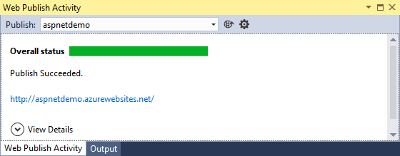
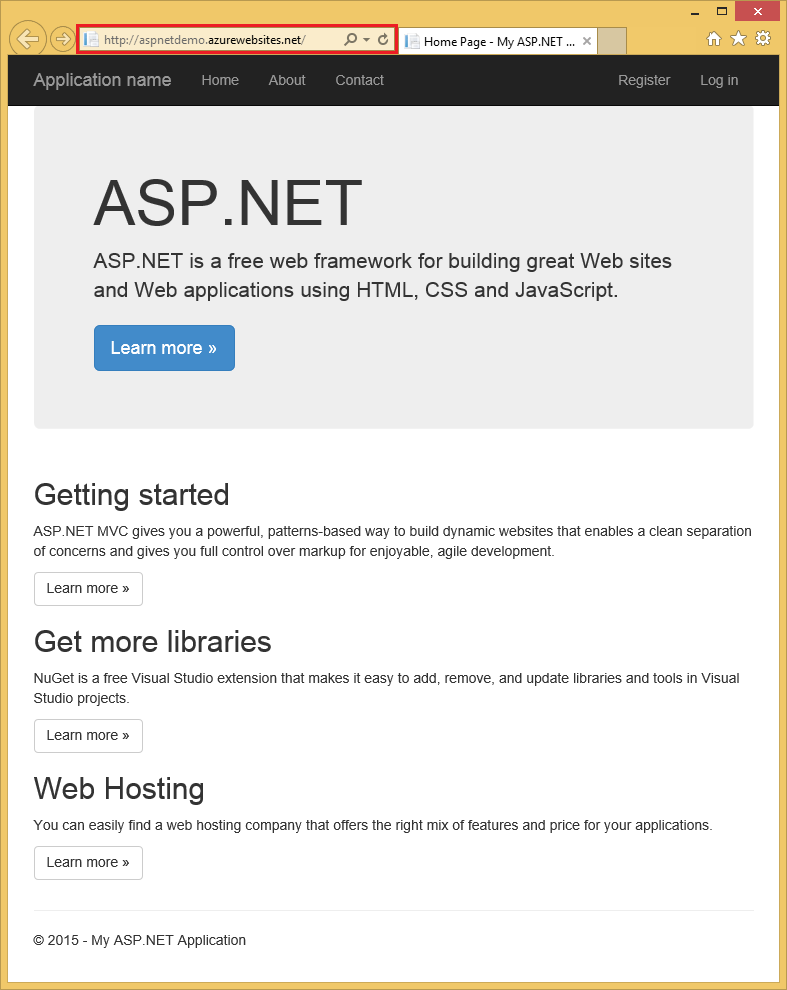

Publish to an Azure Web App using Visual Studio¶
By Erik Reitan
This article describes how to publish an ASP.NET web app to Azure using Visual Studio.
Note: To complete this tutorial, you need a Microsoft Azure account. If you don’t have an account, you can activate your MSDN subscriber benefits or sign up for a free trial.
Start by either creating a new ASP.NET web app or opening an existing ASP.NET web app.
- In Solution Explorer of Visual Studio, right-click on the project and select Publish.
- In the Publish Web dialog box, click on Microsoft Azure Web Apps and log into your Azure subscription.
- Click New in the Select Existing Web App dialog box to create a new Web app in Azure.
- Enter a site name and region. You can optionally create a new database server, however if you’ve created a database server in the past, use that. When you’re ready to continue, click Create.
Database servers are a precious resource. For test and development it’s best to use an existing server. There is no validation on the database password, so if you enter an incorrect value, you won’t get an error until your web app attempts to access the database.
- On the Connection tab of the Publish Web dialog box, click Publish.
You can view the publishing progress in the Web Publish Activity window within Visual Studio.
When publishing to Azure is complete, your web app will be displayed in a browser running on Azure.
